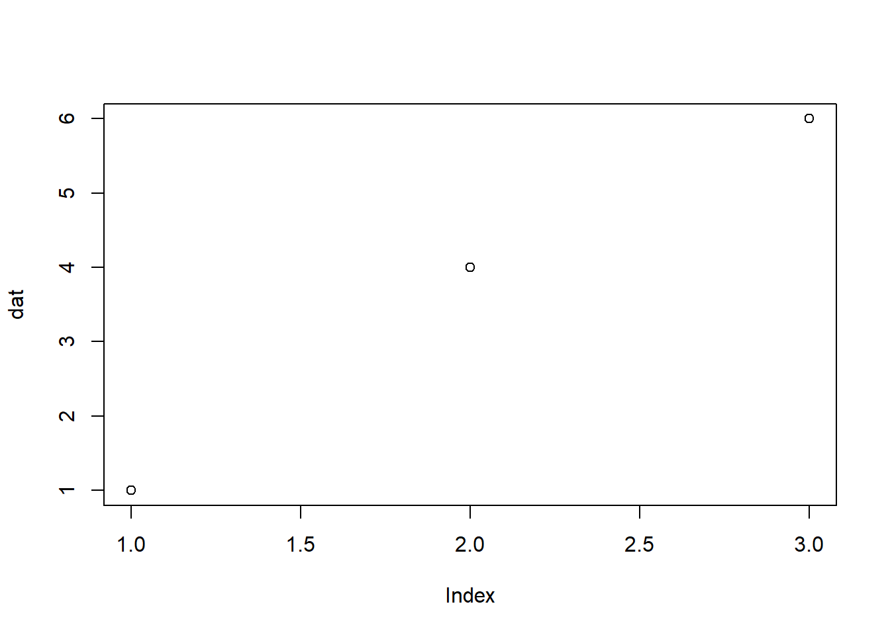

# 名古屋飯といえば
## ひつまぶし：*Hitsumabushi*
おすすめは以下のお店です。
- **ひつまぶし花岡**
- 場所：栄お願い
・ハンズオン形式なので、手元にR Studioをご準備ください！
・どのタイミングでも質問していただいてOKです！
自己紹介
寺井 雅人（Masato Terai）
- 研究：第二言語習得の語彙、知識の身体性
- R(Studio)歴：2018年～現在に至る
- Gmail: terai.research@gmail.com
- X（旧Twitter）: @uniquefreshman
- プログラミング記事：Qiita
はじめに
研究成果や研究資料の公開・共有の必要性
再現可能な研究のために、研究に使用したマテリアルの提出を推奨
e.g., 実験で使用した刺激文、分析に使用した生データ、分析コード
Shared Research Materials and Data Policy for Accepted Articles. Language Learning encourages accepted authors to upload their data collection materials and/or data to the IRIS database (http://www.iris-database.org). IRIS is an online repository for data collection materials used for second language research. This includes data elicitation instruments such as interview and observation schedules, language tests, pictures, questionnaires, software scripts, URL links, word lists, pedagogical interventions, and so on. (…) The sharing of research instrumentation benefits the research community and helps authors and journals increase the visibility of their published research.
Rで分析を行う場合、R Markdownが一番便利
RとWordが合体したようなもの
様々な媒体に簡単に出力できる
- HTML、Word、Power Pointなどなど
- 例(1:00のあたり)
本日の目標
R Markdownを使って分析結果をまとめることができる
- Markdown記法の基礎の基礎
R Markdownでまとめた結果を、様々なフォーマットで共有できる
- HTML、Word、Power Point形式での出力
- RPubs、 Githubなどで公開
- ＋おまけ.
1. R Markdownを使って分析結果をまとめることができる
R Markdownの解体新書
【パーツ１】YAML（YAML Ain’t Markup Language）ヘッダー：文章全体の体裁や情報を操作する
- タイトル、サブタイトル
- 作成者
- 作成した日時、更新日時も設定可能
- どのような形式で作成するか
【パーツ２】コードチャンク：Rのコードを記述するところ
【パーツ３】ドキュメントチャンク：Markdownと呼ばれるプログラム言語で記述するところ
- 見出し、表、箇条書き、強調、斜体など、Wordのリボン部分にある機能をMarkdownで書く
Knit🧶を押して出力！
- 初期設定はHTMLファイル出力です
ドキュメントチャンク：Markdown記法（Wordの部分）
覚えるのはマストではないです。その都度調べて使っていれば、よく使うものを自然に覚えていきます。
Markdownなら生成AIはほぼ完ぺきに正解を教えてくれます
見出し → これはマスト！
- #の数で指定。文字との間を半角あけるのを忘れない。
箇条書き
*,+,-のいずれかを入れる。文字との間を半角あけるのを忘れない。半角スペースを2つ前（もしくはtab）に入れると、レベル２を作れる。さらに2ついれると、、、
強調
*で挟むと斜体
**で挟むとBold体
***で挟むとどうなるでしょう
Let’s 実践
- 以下の文章をMarkdownを使って再現してください。
名古屋飯といえば
ひつまぶし：Hitsumabushi
おすすめは以下のお店です。
- ひつまぶし花岡
- 場所：栄
答え合わせ
実は、Wordのように編集できます！
- Markdownで書かなくとも、VisualモードであればWordと似たようにできます。
- 以下で設定
- [Tools] → [Global Options…] → [R Markdown] → [Visual]
- “Use visual editor by default for new documents”の項目に☑
- “Soft-wrap R Markdown files”にも☑を入れると、右側にアウトラインが出ます
- 欠点として、少し動作が遅い。簡単なものはMarkdownで書く方が速い
- 表などはVisualモードがおすすめ
コードチャンクの挿入（Rの部分）
ショートカットキー：
Windows: [Ctrl] + [Alt] + [I]
MAC: [Command] + [Option] + [I]
このコードの中はRです。Rで使う関数などを自由に指定できます。
以下のチャンク内でないと、動きません。
```{r}
```
dat <- c(1, 4, 6)
mean(dat)[1] 3.666667plot(dat)
{r}の中にもいろいろな指定ができます。
echo=FALSE: コードを非表示にして結果だけを表示
```{r, echo=FALSE}
dat <- c(1, 4, 6)
mean(dat)
```
チャンクのオプションは沢山あるので、その都度チートシートを参照するとよいです。
Let’s 実践
- 以下をドキュメントチャンクとコードチャンクを使って再現してください。
食費の合計
以下は、名古屋旅行で使った食費の合計である。
- 注! hitsuはひつまぶし、misoは味噌カツを表す。
hitsu <- 1300 * 2
miso <- 1000 * 2
total <- sum(hitsu, miso)
total[1] 4600答え合わせ
## 食費の合計
- 以下は、名古屋旅行で使った食費の合計である。
- **注!** *hitsu*はひつまぶし、*miso*は味噌カツを表す
\```{r}
hitsu <- 1300 * 2
miso <- 1000 * 2
total <- sum(hitsu, miso)
total
\```2. R Markdownでまとめた結果を共有することができる
Let’s 実践（一緒に）
- YAMLヘッダーのoutputを変更するだけ！
Wordに出力
Before
title: "Untitled"
output: html_document
date: "2024-04-15"After
title: "Untitled"
output: word_document
date: "2024-04-15"- テンプレートを追加することも可能。テンプレートはきちんとレベル分けの設定などを行っておく必要あり（設定の仕方）。
Power Pointに出力
- 図や表は必ず新しいページに表示されるなど、knitした後の修正が面倒。
title: "Untitled"
output: powerpoint_presentation
date: "2024-04-15"HTML slideに変更
title: "Untitled"
output: ioslides_presentation
date: "2024-04-15"#で定義するレベル分けでスライドの区切りが代わる
- #でスライドのセクション見出し
- ##で新しいページ
- ###ページ内の太文字
枠にとらわれない！
- 以下のチャンクを先頭に入れると、スクロール可能なスライドになる（チャンク内はrではなく、
=htmlにする）。 - 注意点として、タッチパッドや、マウスホイールでスクロールできますが、スクロールバーを掴んでスクロールはできません。
- 以下のチャンクを先頭に入れると、スクロール可能なスライドになる（チャンク内はrではなく、
```{=html}
<style>
slides > slide {
overflow-x: auto !important;
overflow-y: auto !important;
}
</style>
```
HTML形式だと、簡単にウェブサイトにできます
- リンクで他者に共有できます。
- 以下の二つは無料で利用できるが、無料版の場合、リンクを知る人だれもが閲覧できるので注意
RPubsを使う
- コメント機能もあるので、「発表へのコメントは匿名でこちらへ」みたいにできそう。
- 使い方の解説
Githubを使う
Githubとは、コードのバージョン管理をするツール。共同編集可能。
作成したHTMLファイルのファイル名を
index.htmlにしてアップロードし、Pageで公開設定をすればウェブサイトとして公開できます。- こちらもリンクを相手に共有すればいいので便利です
おまけ
R Markdownに含めておくとよい情報
Rのバージョン & 使用したRのパッケージのバージョン
Rやパッケージは不定期に更新され続ける
- Rやパッケージのバージョンが違うと上手く動かないこともある。その場合、Rやパッケージのバージョンが明記されていれば、問題解決のヒントになったりする。
# 以下の一行だけでOK
sessionInfo()R version 4.3.2 (2023-10-31 ucrt)
Platform: x86_64-w64-mingw32/x64 (64-bit)
Running under: Windows 11 x64 (build 22621)
Matrix products: default
locale:
[1] LC_COLLATE=Japanese_Japan.utf8 LC_CTYPE=Japanese_Japan.utf8
[3] LC_MONETARY=Japanese_Japan.utf8 LC_NUMERIC=C
[5] LC_TIME=Japanese_Japan.utf8
time zone: Asia/Tokyo
tzcode source: internal
attached base packages:
[1] stats graphics grDevices utils datasets methods base
loaded via a namespace (and not attached):
[1] htmlwidgets_1.6.4 compiler_4.3.2 fastmap_1.2.0 cli_3.6.1
[5] tools_4.3.2 htmltools_0.5.8.1 rstudioapi_0.17.1 yaml_2.3.10
[9] rmarkdown_2.29 knitr_1.49 jsonlite_1.8.9 xfun_0.49
[13] digest_0.6.33 rlang_1.1.2 evaluate_1.0.3 日付、日時
いつ作成されたファイルで、最後に更新されたのがいつかを示す（基本ウェブサイトはそうしてある）
標準設定では、ファイルの作成日を手動で変更する必要がある
- 変更し忘れたら困る
r Sys.Date：2022-01-20
title: "Untitled"
author: "Masato Terai"
date: "`r Sys.Date()` in JST" # ``と""で囲うのを忘れない。
output: html_document- r Sys.time：2022-01-20 21:36:36
title: "Untitled"
author: "Masato Terai"
date: "`r format(Sys.time(), '%Y-%m-%d %X')`" # ``と""で囲うのを忘れない。
output: html_document寺井おすすめ
- JSTはJapan Standard Time（日本標準時）の略
title: "Untitled"
author: "Masato Terai"
date: "作成日:2024-05-20, 最終更新(JST): `r format(Sys.time(), '%Y-%m-%d %X')`"
output: html_document処理にかかった時間
- 時間のかかる分析を行う人は明記する方が親切！
- いつ終わるのか分からない見通しのつかない分析を実行するのは怖いです。コア数に加え処理にかかった時間が記載されていればおおよその見通しがつきます。
#install.packages("tictoc") # 入れていないかたは先にインストールしてください
library(tictoc)Warning: package 'tictoc' was built under R version 4.3.3tic() #測定開始
I <-NULL
for(i in 1:100000){
I <- c(I, i)}
toc() #測定終了4.99 sec elapsedパソコンの性能など
パソコンの性能で処理の実行時間はかなり変わります。一つ前のセクションで紹介した内容は、このパソコンのスペックの情報と合わせて参考にします。
CPUとコア数とRAM
- CPU
- コア数（論理コア）
- 「論理コア」は「スレッド」「論理プロセッサ」、「仮想コア」とも呼ばれる
- CPUとコアについて
- RAM (Random Access Memory)
- ストレージ（SSDやHDD）ではなく、データを一時保存する場所
#install.packages("benchmarkme") # 入れていないかたは先にインストールしてください
benchmarkme::get_cpu()$vendor_id
[1] "GenuineIntel"
$model_name
[1] "13th Gen Intel(R) Core(TM) i9-13900K"
$no_of_cores
[1] 32benchmarkme::get_ram()137 GBプログラム言語は無料の有益な情報が沢山あります
-
- Rに関する無料のウェブサイトをリストにしています。新しいものを見つけ次第その都度更新しています。
キソケンも無料の勉強会です！
複数人で相談し合う場はとても貴重です！
ぜひご参加ください！